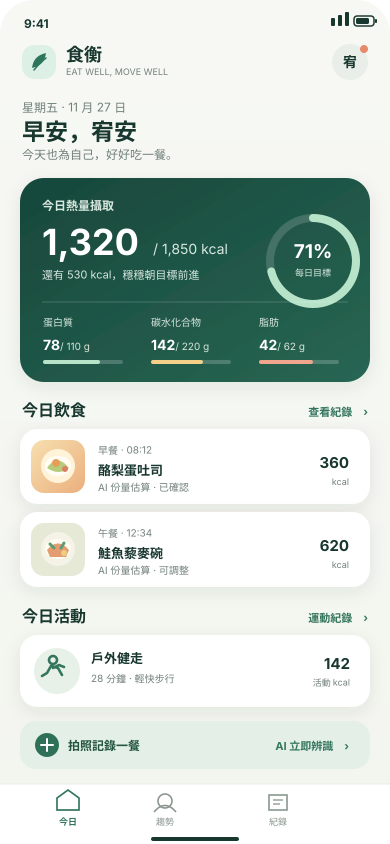
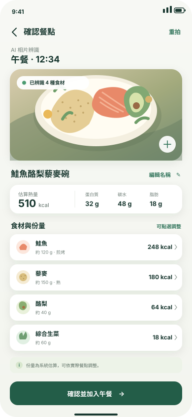
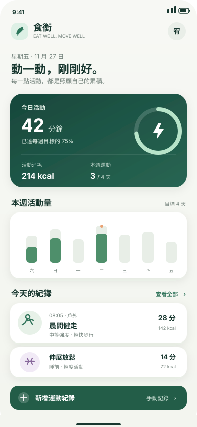

01 · TODAY開啟原尺寸 ↗


今日總覽
熱量與三大營養素目標、餐點摘要、運動紀錄和拍照入口集中在同一頁。
依據系統規劃中的三項核心任務，設計一套可持續使用的飲食與運動管理體驗。
從每日攝取總覽，到 AI 餐點辨識確認，再到活動紀錄與每週回顧。

熱量與三大營養素目標、餐點摘要、運動紀錄和拍照入口集中在同一頁。

拍照後檢視辨識食材、估算份量與營養；使用者可以先調整，再確認加入紀錄。

快速補登運動種類、時間與強度，同時查看每日活動消耗和每週完成情況。